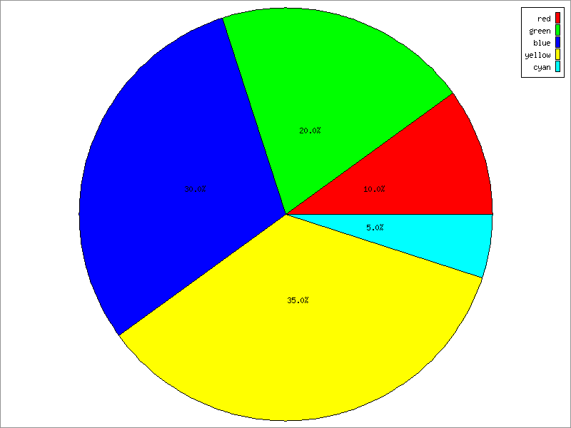

<ion-view title="Nutritional Breakdown">
  <ion-content has-header="true" padding="false">
  
  <br/>
  <a href="">Home</a> <b>></b><a href="">Nutritional Balance</a>
  
  </ion-content>
</ion-view>
